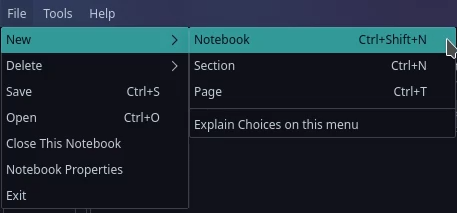
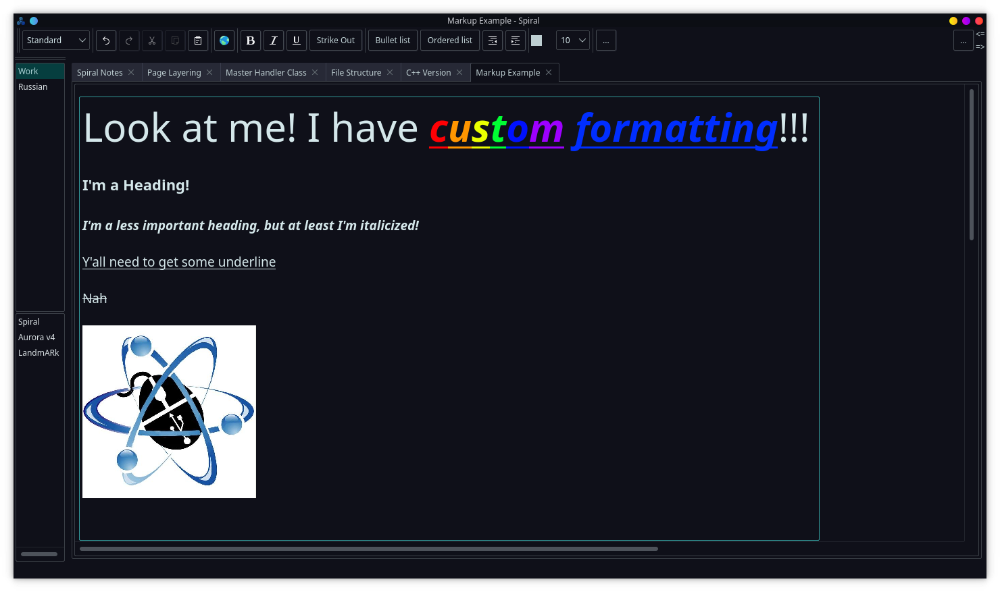
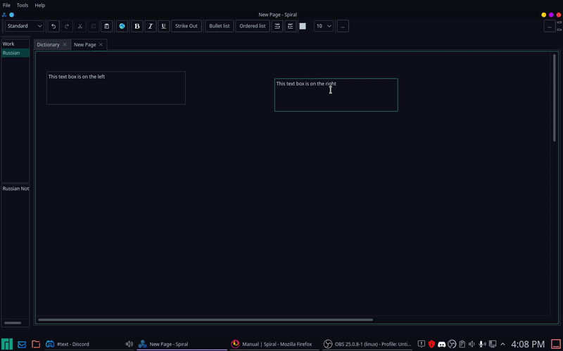
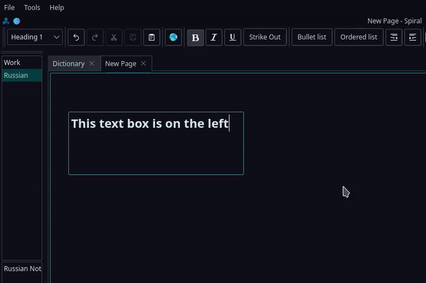
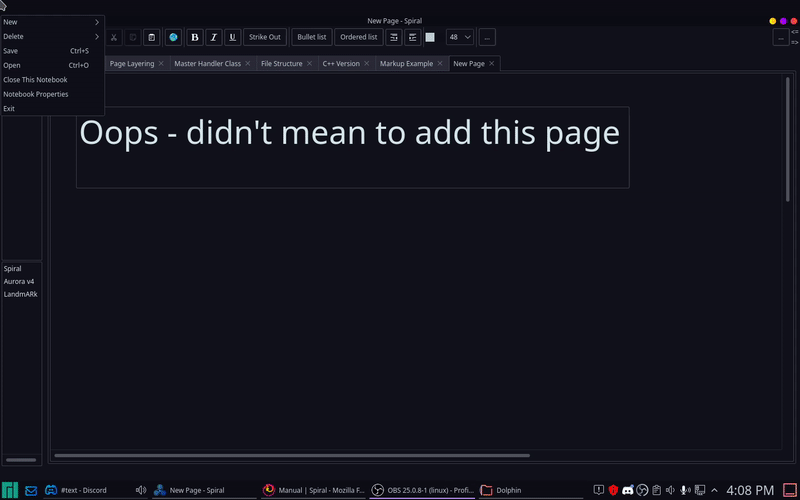

Spiral |
Quickstart
Getting started with Spiral is easy. First, download the latest copy of spiral.zip for either Windows or Linux from the Downloads page and extract it to your application directory. Once this is complete, you can launch Spiral using either the binary named "Spiral" on Linux or "Spiral.exe" on Windows. On Linux, you may have to install a few extra dependencies, which can be found on the Spiral Downloads page.
Once Spiral is launched, you can use the File -> New -> Notebook button to create a new notebook in any directory on your system.

Like a physical notebook, Spiral notebooks are divided into sections, which are subdivided into pages for easy categorization. Using the File menu, you can create as many of these as you like. Once you have your notebook configured, simply click anywhere on a notebook page to place a text box and start typing. Since Spiral uses HTML to save all of its data, you can even include custom formatting and images in your notebooks easily.

Textboxes can also be moved around easily within their pages. Simply click right above the textbox you want to move and drag it to a new location.

To remove a text box from a page, simply remove all of the text from that box, and the box will be automatically removed.
BE AWARE: Deleting a box will PERMANENTLY delete that box's contents. Make backups.

Deleting sections and pages is just as simple. Simply click on the page or section and select File -> Delete -> Page/Section.
